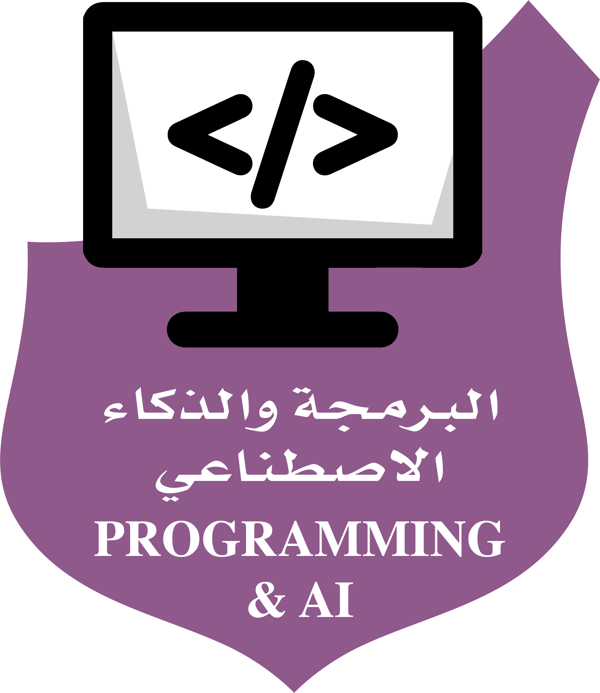

برنامج الدبلوما الأمريكي
طرحت مدارسنا البرنامج الدولي تجاوبا مع رغبة العديد من أولياء الأمور وتحقيقاً لأهداف مدارسنا، ولقد بدأنا فعلاً بالدبلوما الأمريكي منذ عام 2011-2012م وتم تزويد البرنامج بكافة الإمكانات والكادر التعليمي والإداري الأجنبي المؤهل لتحقيق أعلى المستويات من الأداء.
هو برنامج معتمد من هيئة الاعتماد الأمريكي (NCA AdvancED)، يتبع البرنامج معايير ولاية ميشيغان في أمريكا فيما يتعلق بالمقررات المطروحة للبرنامج الدولي والتي تشمل ما يلي:
اللغة الإنجليزية ELA) ) والرياضيات (Math) والعلوم (Science) والعلوم الاجتماعية ) Social Studies) وبعض المواد الاختيارية (Elective) مثل: (Foreign Language لغة أجنبية – الفرنسية …) ( Art فنون) (Drama مسرح) Physical Education) النشاط الرياضي ( وتشمل ما يقارب 70 %من مجموع المناهج المقررة .
إن اعتماد البرنامج الدولي لا يعني إطلاقاً التخلي عن تدريس اللغة العربية، والعلوم الدينية، والعلوم الاجتماعية بكفاءة عالية، نسبة البرنامج العربي مايقارب 30% من المناهج المقررة، وحسب متطلبات الوزارة .
تسعى المدارس لتوفير الكادر التعليمي والإداري للمواد الأساسية من الناطقين باللغة الإنجليزية ومعلمـين ومعلمات معتمـدات (Certified Teachers )، الذين تم استقدام بعضهم من الولايات المتحدة الأمريكية.
التعليم المبني على التفكير TBL
لقد تبنت مدارس التربية الإسلامية برنامج ( التعليم المبني على التفكير ) منذ العام 2008-2009 تحت إشراف المركز الوطني الأمريكي NCTT لتكون مدرسة معتمدة على التفكير.
التعلم المبني على التفكير هو برنامج تعليمي يناسب المراحل الدراسية من مرحلة رياض الأطفال إلى نهاية المرحلة الثانوية في المدارس والكليات بهدف دمج التعليم في مهارات التفكير الناقد والإبداعي في المحتوى الدراسي. حيث يتم تعليم الطلاب مهارات تفكيرية محددة وموجهة لاستخدامها بعد ذلك لاكتساب المعرفة ودمجها في المناهج الدراسية التي يتم تعليمها من قبل معلميهم، كما يقومون باستخدامها في مواقف الحياة المختلفة التي تواجههم .على سبيل المثال، عوضاً عن تعلم الحقائق من كتبهم الدراسية حول كيفية اختلاف عمل مصادر الطاقة مثل كيفية عمل الطاقة الشمسية والنووية، يتم إرشاد الطلاب وتوجيههم على التفكير بطريقةمنطقية عن طريق الطلب منهم اتخاذ قرار والاختيار من بين هاتين الطاقتين أيهما أفضل طاقة ينصح بلاده باستخدامها والاعتماد عليها كمصدر طاقة رئيسي. بعد ذلك عليهم جمع معلومات حول القرار الذي تم اتخاذه والاعتماد عليه لاتخاذ قرار مبني على النظر في مزايا وعيوب في كل من الخيارات المتنوعة التي يرونها. وعند اتخاذ قرار عن أفضل خيار، عليهم أن يكونوا مستعدين للدفاع عن رأيهم. ليتعلم الطلاب معلومات أكثر في حال اتباعهم لهذه الطريقة فضلاً عن حفظ المعلومات الموجودة في كتبهم الدراسية دون فهمها واستيعابها.
بدأ التدريب لمعلمات المرحلة الابتدائية ورياض الأطفال، ثم شمل التدريب معلمات المرحلتين المتوسطة والثانوية. وقد قامت لجنة معتمدة من مركز NCTT بالعمل على إعادة تخطيط المناهج وبنائها على دمج مهارات التفكير من مرحلة رياض الأطفال إلى المرحلة الثانوية وذلك بعد أن أتمت جميع معلمات المدارس مرحلة التدريب، كما يتم تدريب المعلمات المستجدات سنوياً على هذا البرنامج. كما تم تدريب المعلمين في قسم البنين من مدارس التربية الإسلامية على العمل على برنامج الـ TBL .
حصلت مدارس التربية الإسلامية على شهادة المركز الأمريكي الوطني لتعليم التفكير في 8/4/1432هـ الموافق 13/3/2011م ويقوم الدكتور روبرت شوارتز مدير المركز القومي لتعليم التفكير بمتابعة تطبيق البرنامج من خلال زياراته الدورية للمدارس.
لقد غير الكثير من المعلمين في مدارسنا طريقة تعليمهم وإعطائهم للدروس بعد أن أصبحوا معلمين معتمدين للتعلم المبني على التفكير. ونتائج ذلك كانت مثيرة فعلا. ومن الأمثلة على ذلك مثال الطاقة المذكور سابقاً، ولكن بالإضافة إلى ذلك إدخال مهارات التفكير في المواضيع الأكثر شيوعاً كالمقارنة والمقابلة، التصنيف والتنبؤ، والحكم على موثوقية مصادر المعلومات. وقد تم تعديل مهارات التفكير لتتناسب مع الفئة العمرية لطلاب و طالبات رياض الأطفال و الصفوف الابتدائية و جُعِلت أكثر تطوراً في الصفوف المتوسطة و الثانوية.
لقد أوضحت نتائج التعليم المبني على التفكير عن طريق المقارنة بينها وبين أساليب التدريس التقليدية تعزيز تعلم الطلاب بشكل كبير وفهمهم العميق لمحتوى المناهج الدراسية إلى جانب تنمية مهارات التفكير الهامة التي تمكن الطلاب من استخدامها في مجالات أخرى من المناهج الدراسية خلال مراحل الصفوف الدراسية القادمة وأيضاً في حياتهم بشكل عام.
تندرج مهارات التفكير التي يتم تدريسها في برنامج التعليم المبني على التفكير تحت ثلاث فئات أساسية: المهارات التي تمكننا من الخروج بأفكار إبداعية، المهارات التي تنطوي على توضيح أو تحليل هذه الأفكار وفهمها بشكل عميق وأخيراً مهارات التفكير الناقد، وهي المهارات ذات الصلة لتقييم ما إذا كانت هذه الأفكار قابلة للتنفيذ والعمل. يتضمن التعليم المبني على التفكير أيضاً تعليمات حول كيفية استخدام هذه المهارات وتطبيقها في اتخاذ القرارات وحل المشاكل كالمثال السابق حول الطاقة.
الدكتور روبرت شوارتز هو المحاضر والمدير التنفيذي للمركز الوطني لتعليم التفكير في المملكة العربية السعودية، وهو المطور الأصلي لهيكل البرنامج لتصميم الدروس والتدريس. لقد عمل الدكتور روبرت مع المعلمين مدة 25 عاماً لمساعدتهم في استخدام هذا البرنامج وهو المحاضر الرئيسي في ورشة عمل التعليم المبني على التفكير في المملكة العربية السعودية.
مركز الدعم الأكاديمي
يعاني بعض الطلاب والطالبات من بعض التحديات النمائية والإدراكية المرتبطة بضعف القدرة على الانتباه والإدراك، أو حل المشكلات أو اكتساب المفاهيم أو التذكر، تؤدي إلى تدني التحصيل العلمي لديهم، لذا ارتأت المدارس افتتاح قسم يعنى بهؤلاء الطلاب والطالبات.
وقد قامت المدارس بتجهيز غرفة للمصادر للعناية بهؤلاء الطلاب والطالبات للرفع من قدراتهم، يتم في هذا القسم تشخيص الحالات التي تعاني من الضعف الدراسي، وتقديم العلاج المناسب لهم مما يساعد على الحد منها والعمل التدريجي على معالجتها وتقديم الاستشارة التربوية للمعلم مما يمكنّه من فهم قدرات الطالب/ـة والصعوبات التي تواجهه/ها حتى يتسنى التعامل معهم بشكل أفضل. وكذلك توعية وإرشاد أولياء الأمور والطلاب أنفسهم بأهمية برنامج الدعم الأكاديمي وإبراز جوانبه الإيجابية .
أهداف مركز الدعم الأكاديمي :
- تسهيل التعلم لكل طالب يواجه صعوبة في التعلم .
- الرفع من مستوى طلاب الدعم الأكاديمي .
- تنمية قدرة الطالب للتعامل مع الآخرين عن طريق إشراكه في المواقف الاجتماعية المناسبة التي تحقق التوافق الاجتماعي .
- تنمية الثقة بالنفس للطالب في الصف والأسرة والمجتمع .
- تنمية قدرة الطالب على الكلام والنطق الصحيح .
- توجيه الطالب وأسرته لزيادة التعاون والتكامل والتفاعل بين البيت والمدرسة.
رعاية الإبداع
تسعى المدارس بشكل دؤوب إلى توفير البيئة التربوية المميزة وذلك من خلال توفير الكفاءات ذات الخبرات التربوية العالية التي تعمل على تشجيع الطلاب والطالبات على الإبداع والتميز.
تأثير المدارس على الموهبة أو البحث العلمي أو البحوث المقدمة والفائزة خاصة :
تدعم مدارس التربية الإسلامية طلابها و طالباتها الموهوبين في كل المجالات , وتساعدهم على صقل مهاراتهم في المجال الذي يهتمون به , بحيث تقدم المدارس الدعم المستمر لطلابها و طالباتها في مجال البحث العلمي و المشاركة في المعارض العلمية .
ما تقدمه المدارس لطالباتها ولطلابها للوصول بهم إلى هذا الإنجاز:
تقدم المدارس الإرشاد اللازم والتدريب المستمر من خلال توفير ورشات عمل للطالبات والطلاب المشاركين في المعارض العلمية وغيرها من الأنشطة , كما توفر لهم التسهيلات المطلوبة لكي يتمكنوا من التنظيم والتنسيق بين متطلبات الدراسة والمشاركات الأخرى , مما يسهل لهم الطريق إلى الإنجاز والإبداع .
برنامج واثق
تم تصميم (برنامج ديل كارنيجي) واثق التطويري لإعداد الشباب للحياة العملية، فهذا البرنامج يمكنهم من اكتساب المهارات التي يحتاجونها لتحقيق أهدافهم والوصول إلى استغلال كامل طاقاتهم الكامنة في المدرسة وفي المنزل وفي العمل. تتعلم الطالبات في برنامج واثق مهارات التعامل مع الآخرين، والتعامل مع ضغوط التعلم والحياة والتعامل مع أوضاع الحياة سريعة التغير وتنميه مهارات الإقناع وكيفية كسب التعاون مع الآخرين وإبداء آرائهم بثقة وتقبل اختلاف الرأي برحابة صدر إضافة إلى بناء ودعم الثقة بالنفس
قامت مدارس التربية الإسلامية منذ عام 2010/2011م بإدراج هذا البرنامج الرائد كجزء من المنهج الأساسي من خلال تقديمه على مدار 13 أسبوع ممتدة على مدار العام الدراسي بواقع جلستين أسبوعياً تقدم ضمن ساعات الدوام الرسمي. عند انتهاء الدورة تحصل الطالبة على شهادة معتمدة من قبل مركز ديل كارنيجي. تم الإعداد لهذا البرنامج وتنسيقه بحيث يضمن حصول كافة طالبات المرحلتين المتوسطة والثانوية على المستويات الثلاث لبرنامج واثق وهي: واثق 3،2،1. و تم تقسيم الطالبات على أعوام من عام 2010م وحتى عام 2014م والعمل مستمر على واثق.
البرامج الإثرائية
تماشياً مع رؤية وزارة التعليم لتحقيق الميداليات المتنوهة في الاولمبياد الدولية,ورؤية المملكة لرفع المشاركات الطلابية في البرامج الاصفية و التي لها الأثر الأكبر في سد الفجوة لبناء المهارات الحياتية المختلفة لدى أبنائنا وبناتنا الطلاب و التي تدعم تدعم رسالة مدارسنا نطلق عدة برامج تقنية و اجتماعية إثرائية لا صفية .
نادي القران الكريم
يعتبر نادي القرآن الكريم فضاءً تربويا يسعى إلى الإسهامفي بناء نشئ يتسم بالفاعلية و التوازًن و المسؤولية، و الاعتزاز بانتمائه الديني و الوطني. يحلق فيه المتدربون إلى سماء الابداع والإنجاز ضمن برامج ومخططات بنيت على أسس عملية سليمة لمصاحبة الحافظين ودعمهم وتوجيههم في رحلة حفظ آيات كتاب الله وسوره العظيمة، والوقوف في محطات لأنشطة متنوعة تهدف إلى تحبيب المتعلم في كتاب الله وتدبره وحفظه، وتنميةالحس الوجداني وترسيخ القيم الفاضلة التي تنعكس إيجابيا على السلوكيات والمعتقدات لدى أعظم استثمارًاتنا وهم أبناؤنا الأعزاء
نادي الدراما
يخلق نادي الدراما بيئة إيجابية مثالية للمتدربين الذين يطمحون في إبراز وتنمية مواهبهم في التمثيل ، الكتابة ، الإخراج والتصميم، وتشجيعهم وتطوير إمكاناتهم بالعمل ضمن مجموعات تعاونية تساهم في تخطي مشاكل الخجل والمقدرة على التعبير بسهولة.من خلال التدريب على إتقان مهارات التمثيل والتعبير الحركي والجسدي الذي يساعد المتدربين على خلق طاقة إيجابية تساهم في تطوير الاستبصار الذاتي وتنمية الاستجابات والانفعالات النفسية الحركية لديهم، يتضمن النادي تدريبات على تمثيل مسرحيات وتجارب لأداء شخصيات والعديد من الأدوار ، تختتم أنشطة النادي بعرض مسرحية نهائية تعكس ما تم تعلمهوإتقانه من مهارات فنية وتمثيلية.
نادي الكتاب
تكمن أهمية الانضمام إلى نادي الكتاب في كونه يخلق مناخا جاذبا لتشجيع القراءة والاطلاع، والتي تعد أهم أدواتً الولوًج إلى عالم المعرفة وفضاءه الواسع، يعمل أعضاء النادي على قراءة العديد من الكتب القيمة والمتميزة أدبيا، والتي تنمي لديهم التعلم الذاتي وتوسع مداركهم وتغذًي عقولهم، ليتم بعد ذلك مناقشة الكتاب وأهم المحاور التي تم استنتاجها منه والدروسالمستفادة ليتم ربطها بالواقع الذي يعيشه طلابنا الآن
نادي محاكاة الأمم المتحدة
يعد هذا النادي هو الوجه الأمثل لكل من يرغب في إعداد أبنائه لينخرطوا في السلك الدبلوماسي، لأنه يحاكي الأمم المتحدة من عدة مجالات منها : التكوين العام ،تعددية الأطراف، الجلسات ، التصويت واتخاذللقرارات يتعلم أعضاء هذا النادي مهارات متعددة في القيادة من خلال تمثيلهم كسفراء لدول يختارونها بأنفسهم، ويتقنون فنون الحوار والنقاش من خلال طرح المشاكل وأبرز القضايا التي تتعلق ببلدانهم، كل هذه الأجواء قادرة على خلق شخصيات منفتحة على العالم قادرة علىتمثيل الوطن وخدمة مصالحه مستقبلاً
نادي التصوير
الهدف الأساسي من النادي هو العمل على إظهار موهبة التصوير الموجودة لدى الطالبة. وتوفير الأنشطة الازمة لصقل هذه الموهبة. وهذا يساعد الطالبة على بناء شخصيتها و زيادة ثقتها بنفسها. و النادي يسعى لتدريب و مساعدة الطالبات على أنيرين الفن في العالم المحيط بهن عن طريق التقاط الصور داخل و خارج المدرسة, و عرض هذه الصور في معرض نهاية العام الدراسي.
نادي الصحافة
يصدر النادي صحيفة مرة كل شهر, و تتولى الطالبات مهمة التحرير و الكتابة كاملة. ويكون دور المدرسة الإشراف فقط. ويجب أن يكون محتوى الصحيفة معبراً عن الطالبات باتخاذ الصحيفة وسيلة للتعبير عن أنفسهن. لتكون مرأة عاكسة لأحوالهن. و يتم وضع نسخة من الصحيفة على الموقع الإلكتروني للمدرسة. و هذا النادي يظهر تحسين العلاقة القائمة بين المدرسة و الطالبة.
البرمجة و الذكاء الاصطناعي

نخلق لكم فرصة مثالية لتطوير المهارات من خلال عملية تعلم برمجة الروبوتات حيث أن البرمجة هي لغة التخاطب بين الإنسان والآلة من خلال تنفيذ مهام وأوامر يتعلمها الطالب باستخدام جهاز الحاسب وينفذها جهاز روبوت مخصص باستخدام لغات برمجة مختلفة تثري ثقافته العملية والتقنية وتهيئه لعالم الثورة الصناعية الرابعة
الالكترونيات
تعلم برمجة الإلكترونيات يتيح للطالب إنشاء المشاريع المؤتمتة باستخدام اللوح الإلكتروني المسمى (الاردوينو) والذي يتكون من دارة إلكترونية يمكن برمجتها لعمل على آلاف البرامج عن طريق جهاز الحاسوب، كما يعد تعلمها البرمجة الاصطناعيوالذكاء مدخلاً مهماً للتعرف على إنترنت الأشياء وله أهمية كبيرة في المجالات التقنية الحديثة
طابعات ثلاثية الأبعاد
تعد تقنية علم الطباعة الثلاثية ثورة علمية في مجالالتعلم والتعليم ، ومساعد فعال يستخدم لتحويل كل ما تتخيله إلى مجسم ثلاثي أبعاد ملموس من خلال استعمال جهاز الحاسب لتصميم النماذج ومن ثم طباعتها بطابعات مخصصة داخل ورشة العمل واستعمالها
العلوم المرحة
تنفيذ اختراعات بسيطة بصورة علمية وترفيهية يستفيدمنها الطالب لتنمية شخصيته الإبداعية وتفكيره العلميفي بيئة علمية تفاعلية مرحة، يمارس فيها الطالب العديد من التجارب التي تجعل من العلم عالما مسليا مما يزيد حصيلة الطالب العلمية ويساهم بزرع حًب العًلوم عند الطلاب
الوقاية من التنمر
سيتعرف الطالب على صفات المتنمر وأنواع التنمر من خلال التعرف على أنواع المشاعر وطرق التعبير عنها ومهارات التعامل مع مختلف الشخصيات بالمجتمع في بيئة تفاعلية و قصص ومواقف تتم مناقشتها للتعرف على أضرار التنمر على المجتمع والفرد
نادي تطوير الذات
تطوير الذات والاهتمام بصقل المهارات الشخصية هو اللبنة الأولى للوصول إلى النجاح الذاتي والاجتماعي حيث يشارك الطالب في العديد من الأنشطة التفاعلية التي تركز على معرفة الذات ونقاط القوة للشخصية المؤثرة
نادي الروبوت
يتعرف طلابنا في نادي Robotics على مبادئ علوم الروبوت التي تدمج بين (علم الميكانيكا – علم الإلكترونيات والكهرباء - علم البرمجة ) من خلال العمل بناء في بيئة محفزة مدعمة بحقائب تدريبية وبرامج حاسوبية وأدوات مختلفة، لتمكين طلابنا من تصميم وتركيب أنواع الروبوتات، ومن ثم تنفيذ مشاريع لبرمجة الروبوتات الفرديةلحل مشكلات تخدم المجتمع
نادي الكشافة
يعمل نادي الكشافة على تشكيل نواة للحركة الكشفية التي تتكون من عدد من الأعضاء القادرين على الانخراط في برامج واقعية وأنشطة متعددة تعمل على بناء شخصياتهم وتعزيز المواطنة الصالحة لديهم ،من خلال تدريبهم على الانضباط ،وتحمل المسؤولية و احترام من الآخرين، والكشف عن قدراتهم الكامنة والجماعية والتي تصب في خدمة المجتمع
نادي الخطابة
إلى كل من يسعى ليصبح قائدا وملهماً، وصاحب تأثير عميق على الآخرين عليه الانضماًم لهذا النادي المتميز، حيث يتعلم المتدرب أصول علم الخطابة والإلقاء من خلال انخراطه في عدد من الأنشطةو البرامج التي تعززو تصقل هذه المهارة و تساعده على التعبير عن النفس بثقة و تزيد القدرة على التأثر الفعال في الآخرين و إقناعهم.
نادي الرياضة
يعمل هذا النادي على توفير بيئة صحية سليمة تنمي اللياقة البدنية وتطور المهارات الرياضية لدى المتدربين،وتعزز وتغذي الصحة الجسدية و النفسية لديهم، من خلال تطبيق العديد من الأنشطة و الفعاليات و ممارسة التمارين و الحركات, بهدف الارتقاء بالكفاءة الوظيفية لأجهزة الجسم, و اكتساب المهارات الحركية و القدرات الرياضية الصحية,التي تعمل جميعا على تكوين و تقويم العادات و السلوكيات للمتدربين لتصبح إيجابية و تنعكس على واقع حياتهم العملية و ما يواجهون من تحديات و صعوبات نحو تحقيق الأهداف و النجاحات المستقبلية.
نادي الرؤية
تم تأسيس نادي رؤية 2030 لخلق جيل قادر على التخطيط ووضع الأهداف لتحقيق النجاحات والإنجازات، ينخرط المشاركون في هذا النادي ضمن مجموعة من البرامج والأنشطة التي تصب في تحقيق أهداف ومحاوررئيسية وهي 1. رفع وزيادة الوعي برؤية الوطن 0302 2. نشر وتبسيط أهداف الرؤية في المجتمعات المحيطة 3. زيادة التمكن من التفاعل الإيجابي مع مستجداتالرؤية 4. التوعية بمسار خطط القطاع الحكومي والخاص نحوتحقيق الرؤية